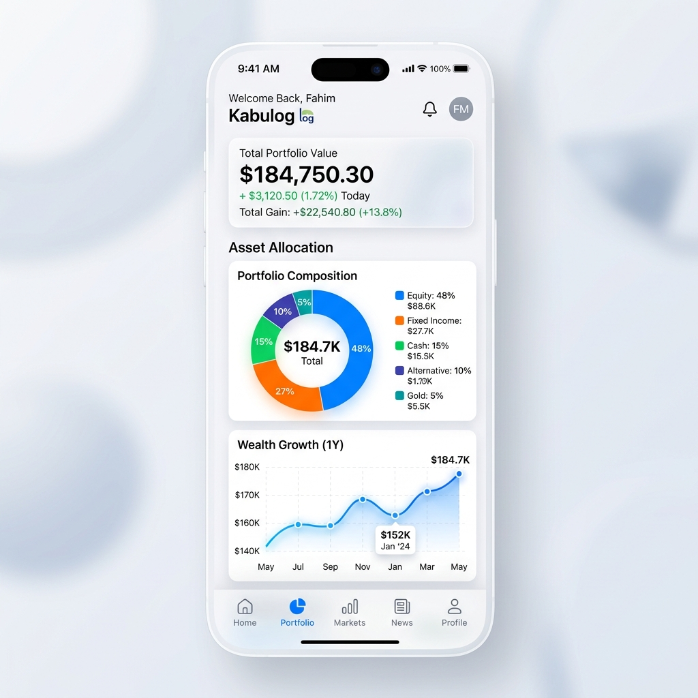
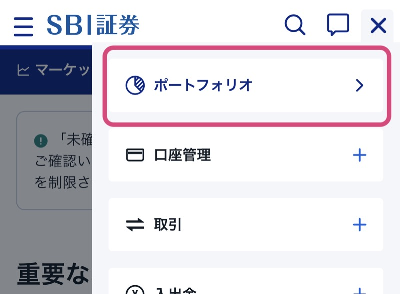
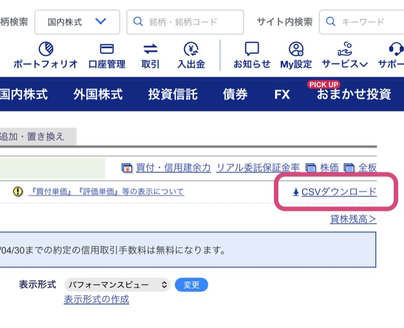
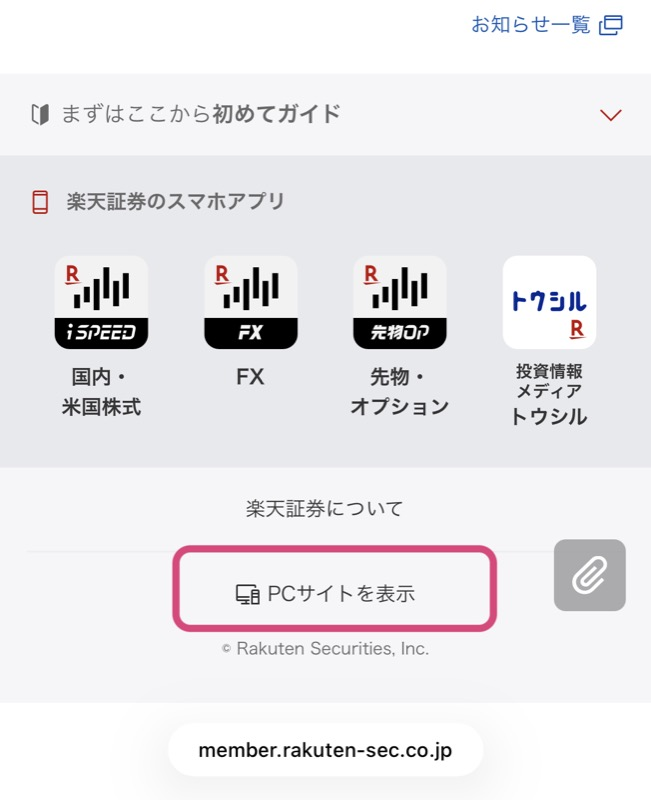
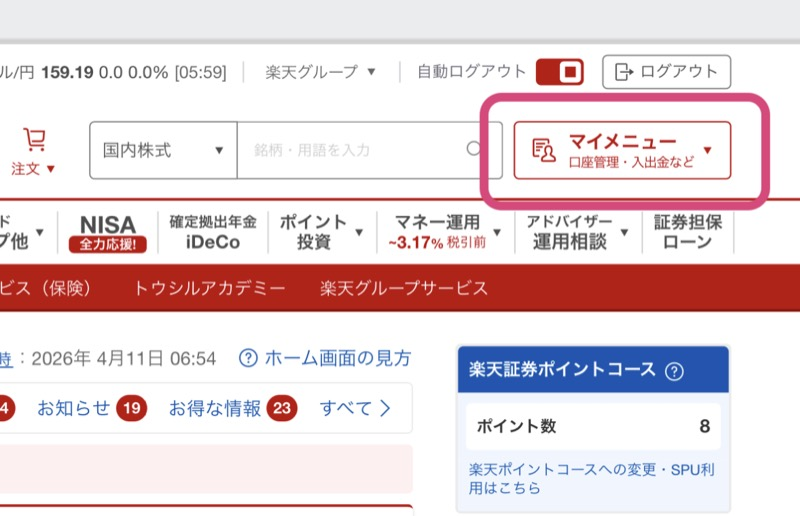
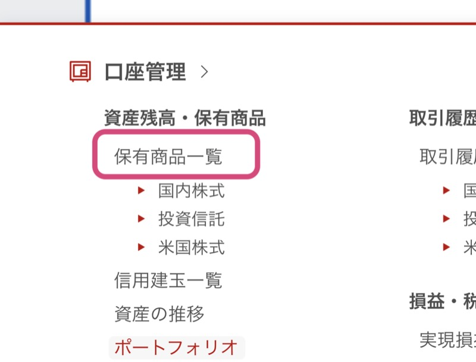
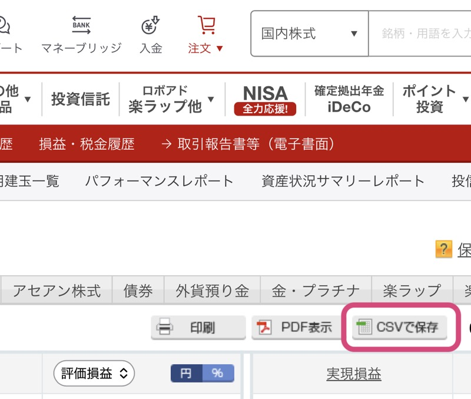
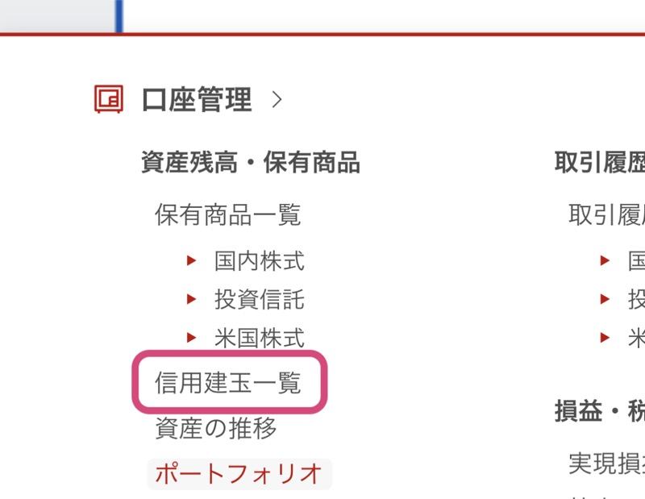
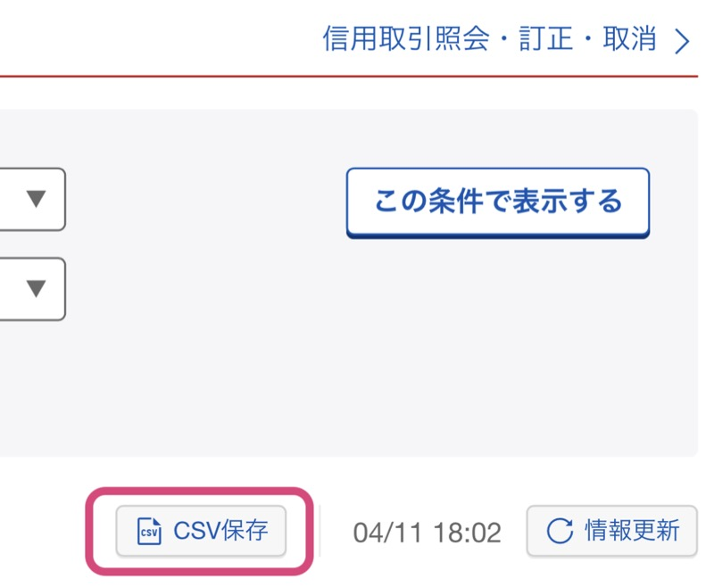
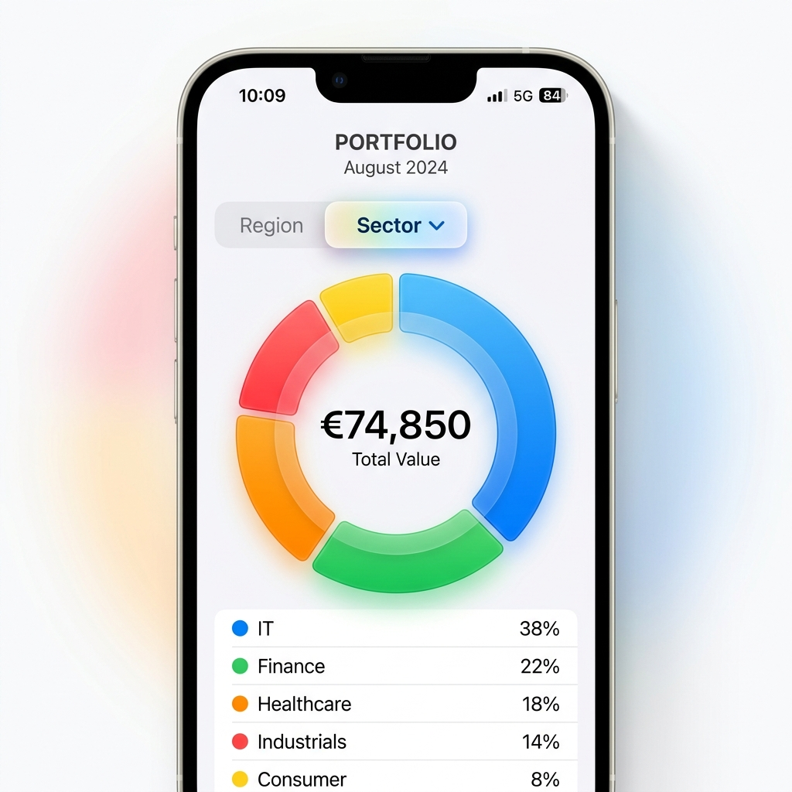

SBI証券・楽天証券のCSVをインポートするだけ。複数口座や家族の資産を一箇所に集約。地域、セクター、投資スタイルなど「自分だけの軸」で、自由自在に資産を分析・管理できます。

アプリの「CSV読込」からファイルを選択。複数ファイルを一括で読み込み、家族全員の資産を合算することも可能です。
「自分のSBI証券、妻の楽天証券、子供の未成年口座...」
バラバラに管理していた資産も、CSVを読み込むだけで自動的に合算。世帯全体の資産状況を、シンプルかつ強力なダッシュボードで一元管理できます。
証券会社サイトからのCSVダウンロードは、iPhone標準のSafariブラウザで行うことを強く推奨します。他のブラウザ（Chrome等）では、ファイルが正しく保存されない場合があります。
SBI証券にログイン後、右上の3点メニュー（または「口座管理」メニュー）より「ポートフォリオ」をタップします。

画面右上の「CSVダウンロード」をタップすると、ファイルが保存されます。

楽天証券にログイン後、ページ最下部までスクロールし「PCサイトを表示」をタップします。
※最新のCSV出力機能を利用するため、PC版表示が必要です。

右上の「マイメニュー」ボタンをタップします。

左上の「保有商品一覧」をタップします。

右上の「CSVで保存」をタップします。

マイメニュー左上の「信用建玉一覧」をタップします。

右上の「CSV保存」をタップします。

ブラウザでダウンロードしたCSVは、通常iPhoneの「ファイル」アプリの「ダウンロード」フォルダに保存されます。
iCloud Drive または「このiPhone内」の両方を確認してください。
銘柄ごとに最大5つまで自由なカテゴリ（分析軸）を設定可能。証券会社標準の分類に縛られず、あなたの投資スタイルに合わせた多角的な分析が行えます。
一度設定すれば、ダッシュボードの円グラフをタップするだけで、その切り口での資産構成が瞬時に表示されます。シンプルながら、プロ並みの分析環境をあなたの手に。
